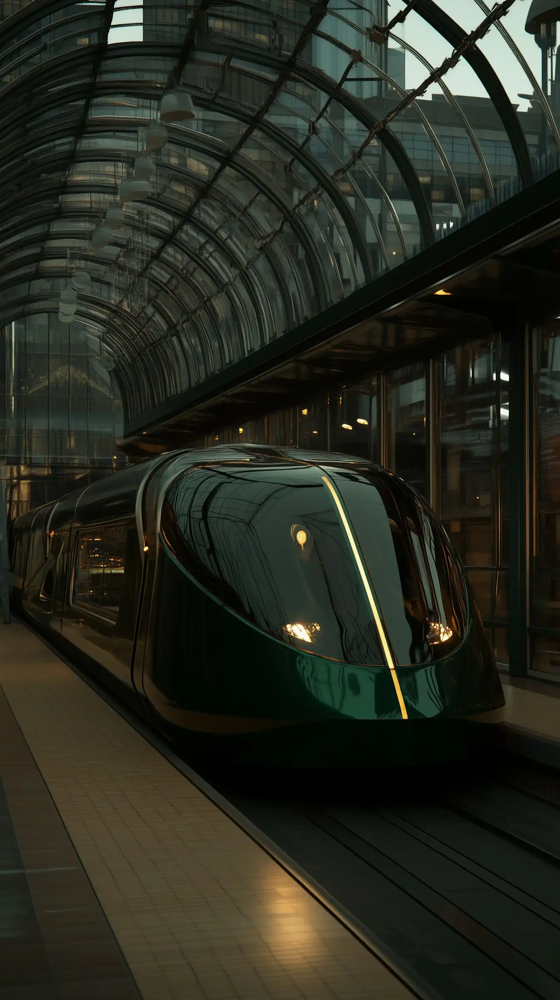
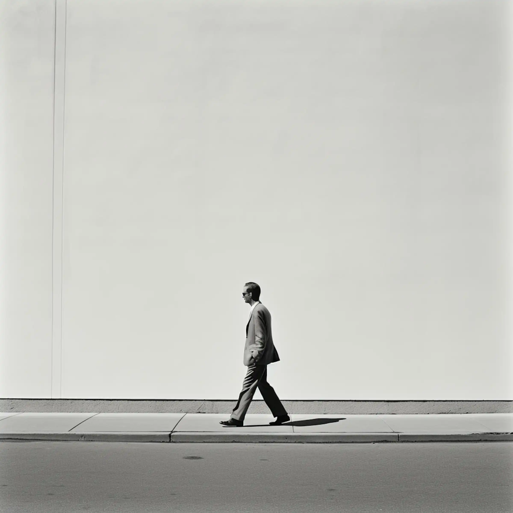
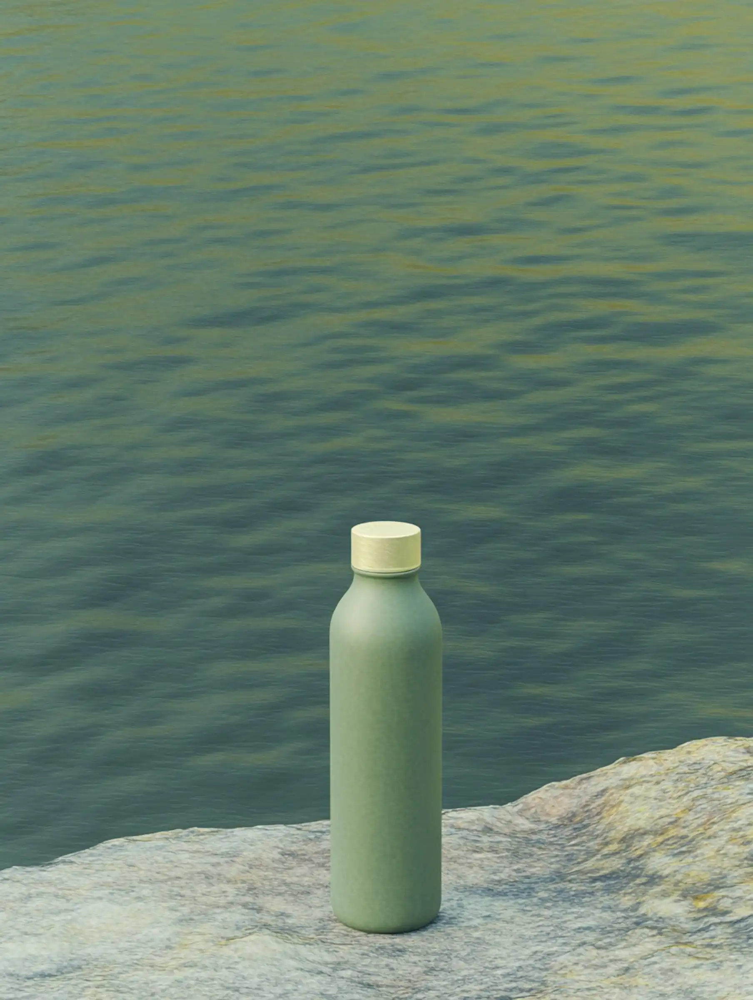
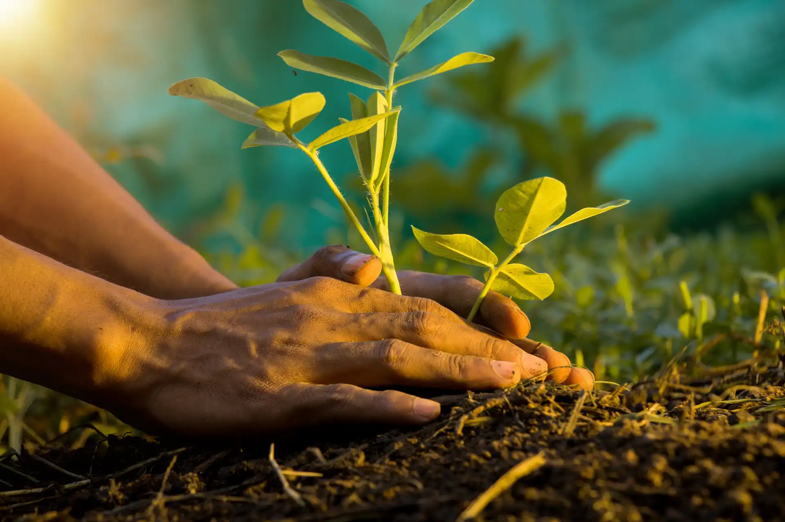
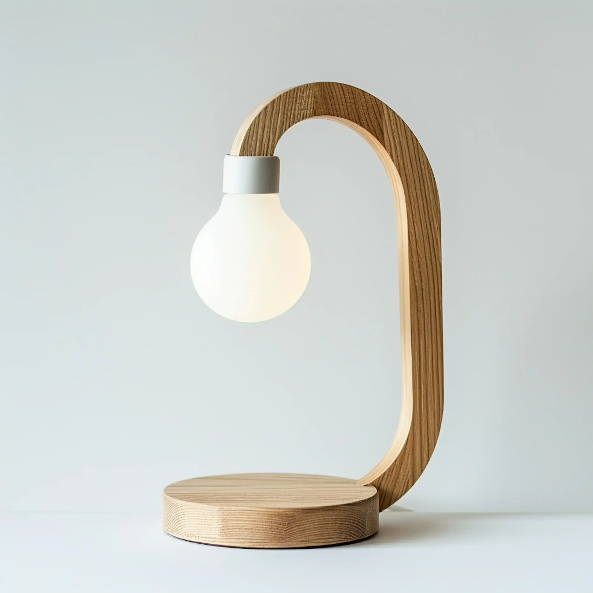
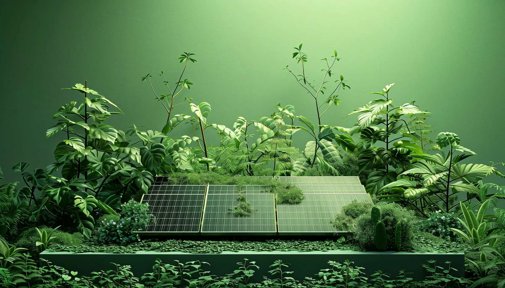
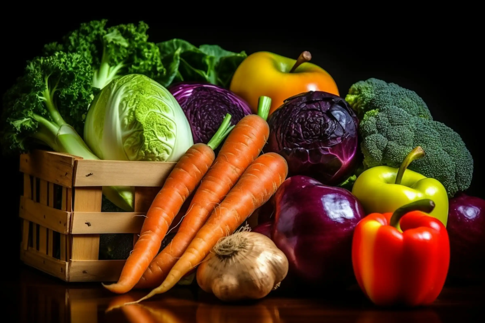
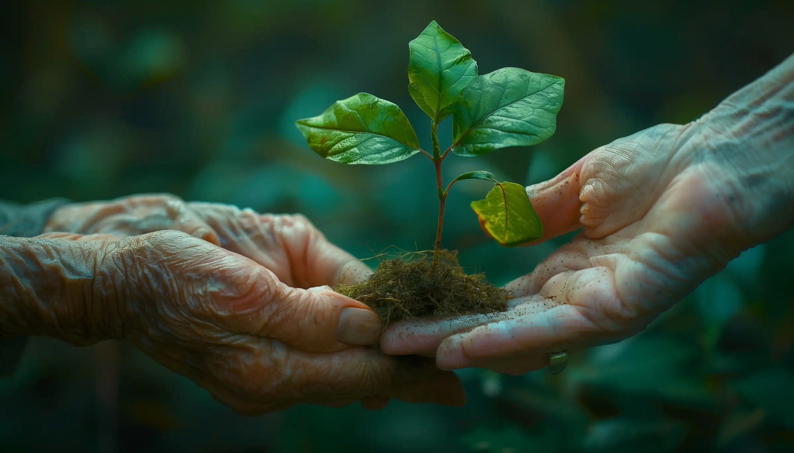
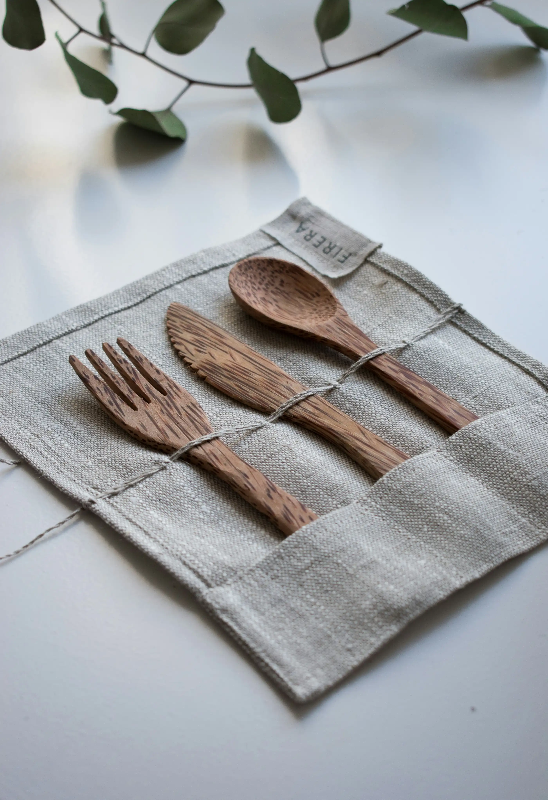

10 Simple Choices You Can Make Today for a Healthier Planet.
Making the world a better place doesn’t have to be hard. Here are 10 simple things you can do to protect the environment and help create a healthier planet for everyone. Even small changes can make a big difference!
1. Conserve Water
Water is precious, so let’s use it wisely! Turn off the tap while
brushing your teeth, fix any leaks, and try to take shorter showers.
Every drop counts!
And stop drinking bottled water. Switch to filtered tap water.
You'll save a ton of cash and help reduce a ton of plastic waste in
the process.
2. Be Car-conscious
Cars pollute the air, so try to use them less. Walk, bike, or use public transit when you can. Not only does this help the environment, but it’s also a great way to stay healthy!
3. Walk, Bike, or Take Public Transit
Instead of driving, why not walk or ride your bike? You’ll save energy, reduce pollution, and get some fresh air. If you have to go farther, public transit is a great choice too!
4. Reduce, Reuse, Recycle
Instead of throwing things away, think about how you can reduce waste. Use things more than once (like reusable water bottles or bags), and recycle items like paper, plastic, and glass to help them be reused.
5. Give Composting a Try
Composting is a natural way to turn food scraps and yard waste into healthy soil. Instead of tossing banana peels and apple cores in the trash, compost them to help reduce waste and grow plants.
6. Switch to LEDs
LED lights use less energy and last longer than regular bulbs. Making the switch to energy-efficient lights can help save electricity and money!
7. Live Energy Wise
Turn off lights when you’re not using them, unplug electronics, and use energy-efficient appliances. Being smart about your energy use can help save the planet and your bills!
8. Eat Sustainable Foods
Eating food grown locally and sustainably helps the environment. Try to eat less meat and choose more fruits, vegetables, and plant-based options. This can reduce pollution and help save water.
9. Plant a Tree (or Two)
Trees are amazing! They clean the air, provide shade, and help animals. Planting trees is an easy way to give back to the planet and make your community greener.
10. Give Up Plastics
Plastic takes forever to break down and pollutes our oceans and landfills. Choose reusable items instead, like cloth bags, metal straws, and refillable water bottles.
Small Steps, Big Impact!
Every little change you make can have a positive effect on the environment. Start with one or two of these tips and see how you can help make the planet healthier and happier. Let’s all do our part!